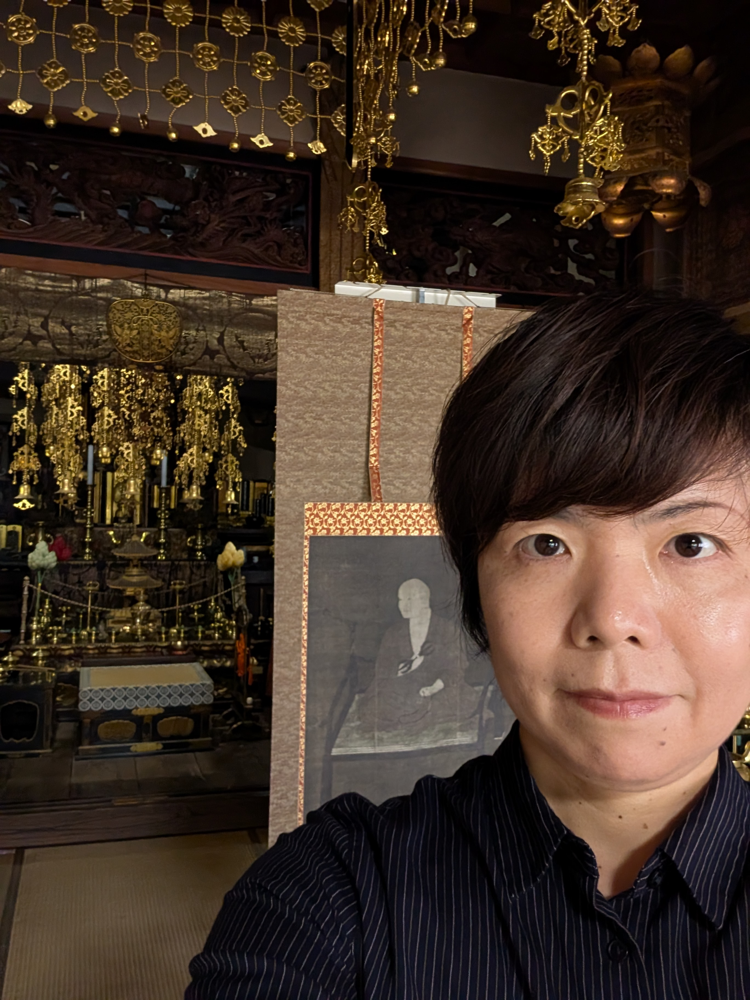
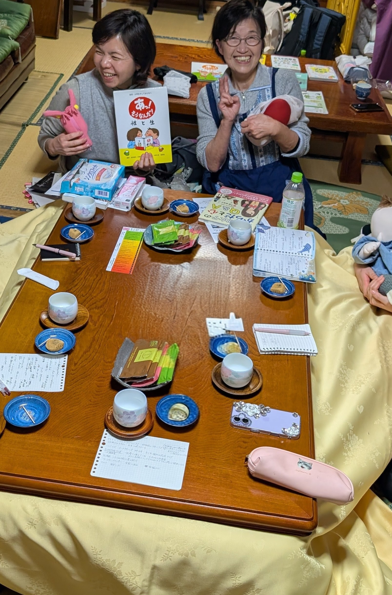
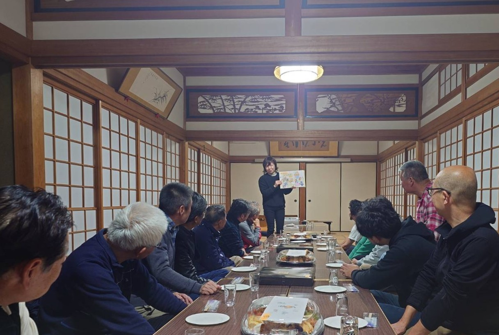

助産師が届ける、こころとからだの学び
わたしを大切に。あなたを大切に。
自分のこころやからだを大切にし、
互いを尊重しながら、自分らしく生きていく。
そんな毎日につながる性教育を、
学校や地域、お寺から届けています。

TERAIROHA ／ MIDWIFE & SEXUALITY EDUCATION
安心して話せること。
人とつながれること。
人生の節目には、それぞれの想いや悩み、不安があります。
そんな時、誰かに話を聴いてもらえたり、そっと支えてもらえたりすること。そのぬくもりが、こころを少し軽くし、また前を向く力になると感じています。
一人ひとりが自分らしく、安心して人生や子育てを選び、
歩んでいけるように。そっと寄り添える存在でありたいと思っています。

PROFILE ／ プロフィールお寺で暮らす、地域の助産師。
大月 美保子
助産師・看護師 ／ てらいろは助産院
お寺で暮らす、地域の助産師。
そして、3児の母です。
福岡県出身。看護学生の時に出産に立ち会い、生命誕生の瞬間に心を動かされたことが、助産師を目指すきっかけでした。東京の大学病院や産婦人科クリニックで経験を積み、2008年に京都府福知山市へ。
出産や育児の中で悩み、たくさんの方に支えていただいた経験から、安心して話せること、人とつながれることを大切にしています。お寺や学校、地域で包括的性教育の講座を行っています。
- 看護師として、産婦人科での勤務を開始。
- 助産師資格を取得。東京の大学病院、産婦人科クリニックで経験を積む。
- 京都府福知山市へ移住。夜久野町のお寺での暮らしを始める。
- 4月、出張専門の「てらいろは助産院」を開業。
地域での活動・大切にしている視点
京都府助産師会で包括的性教育を学び、お寺・学校・地域で実践しています。また、産婦人科医師や助産師の仲間とともに、ユースクリニック福知山「みんなの保健室〜にじラボ〜」の立ち上げにも携わりました。
包括的性教育とSRHR（性と生殖に関する健康と権利）の視点を大切に、一人ひとりが自分らしく暮らせるよう、対話を重ねています。

LECTURES ／ 講演・講座性教育を、
性教育を、
もっと身近な対話に。
自分のこころとからだを知ること。
相手の想いを大切にすること。
日々の暮らしにつながる包括的性教育を、助産師としての経験とともに届けます。
学校保護者地域団体
講演・講座を詳しく見る